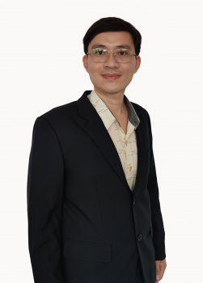

อาจารย์ประจำสาขาวิชาวิศวกรรมคอมพิวเตอร์ คณะเทคโนโลยีอุตสาหกรรม มหาวิทยาลัยราชภัฏพิบูลสงคราม ผู้เชี่ยวชาญด้าน Embedded Systems, IoT, Signal Processing และ Medical Devices
สำเร็จการศึกษาจากมหาวิทยาลัยนเรศวร ภาคเหนือตอนล่าง
บูรณาการฟิสิกส์ประยุกต์เข้ากับวิศวกรรมคอมพิวเตอร์
ออกแบบฮาร์ดแวร์ เฟิร์มแวร์ และโปรโตคอลไร้สายระดับอุตสาหกรรม สำหรับระบบตรวจวัดอัตโนมัติ
DSP, Phase-Locked Loop (PLL) และการวิเคราะห์สัญญาณเพื่อการวัดความแม่นยำสูง
วงจรอะนาล็อก/ดิจิทัล, Sinusoidal Oscillator using CFOAs และระบบควบคุมมอเตอร์
อุปกรณ์ทางการแพทย์มาตรฐานสูง เช่น เครื่องวัดออกซิเจนในเลือด สำหรับเครื่องหัวใจและปอดเทียม
ทรัพย์สินทางปัญญาที่ตอบโจทย์สังคมอย่างเป็นรูปธรรม
สำหรับเครื่องหัวใจและปอดเทียม ใช้ในห้องศัลยกรรมหัวใจ
สนับสนุนเกษตรกรในระบบไฮโดรโปนิกส์
อุปกรณ์ช่วยเหลือผู้พิการทางการมองเห็น
Appropriate Technology สำหรับนักกีฬาและผู้ออกแบบอุปกรณ์กีฬา
สื่อการสอนฟิสิกส์สำหรับนักศึกษา
ช่วยเหลือผู้พิการหรือผู้จำหน่ายสลาก
สำหรับการเรียนการสอนฟิสิกส์ระดับสูง
Web app อ่านข้อมูลเซนเซอร์ตรวจน้ำท่วมแบบ real-time จาก smart contract บน JIBCHAIN L1 ด้วย Viem.js พร้อมกราฟประวัติและตารางข้อมูล
ตีพิมพ์ในวารสารนานาชาติและนำเสนอในเวทีระดับโลก
พื้นฐานอิเล็กทรอนิกส์กำลังและระบบสื่อสาร 5G/6G
วงจรแปลงค่าความจุไฟฟ้าเป็นแรงดันเพื่อวัดความชื้นข้าวเปลือก
ระบบทำนายท่าทางออกกำลังกายด้วย Machine Learning และ Wearable Sensors
ระบบตรวจจับการหกล้มผู้สูงอายุแบบสวมใส่ด้วย IoT
การจำลองสัญญาณไฟฟ้าหัวใจ Wolff-Parkinson-White (WPW)
ระบบวัดความดันโลหิตอัตโนมัติแบบ IoT
ภารกิจด้านการสอน การประกันคุณภาพ และการบริการสังคม
CUPT Internal Program Assessor ระดับหลักสูตร ตามเกณฑ์อาเซียน
ให้คำปรึกษาด้านการออกแบบวงจรไฟฟ้าและเครื่องมือวัดแก่อุตสาหกรรม
บูรณาการ Soft Skills และนวัตกรรมเพื่อสังคมในหลักสูตร
Blockchain, Prompt Engineering, AI และ Cybersecurity